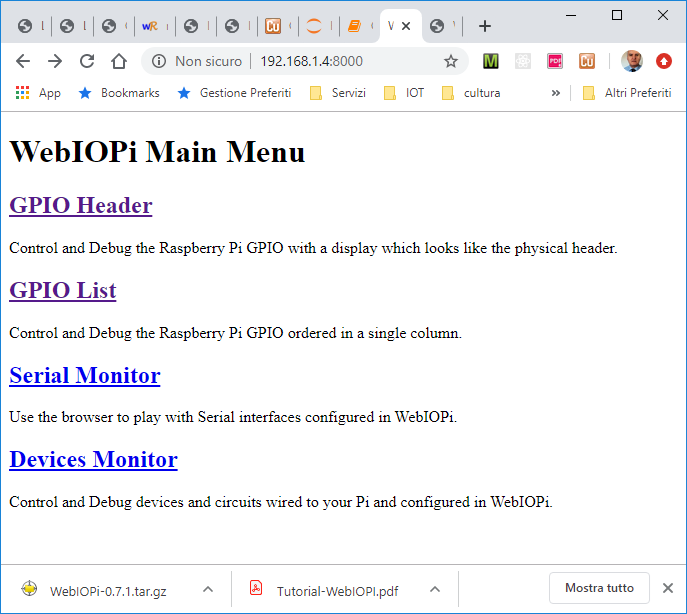
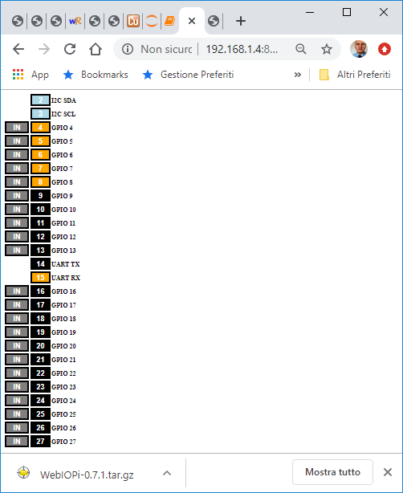
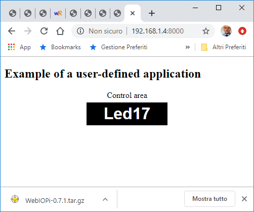

LabRaspiWebiopi | Using WebIoPi
Starting
See
- WebIoPi
-
WebIoPi Tutorial : Using devices
-
WebIoPi Device support
-
WebIoPi Tutorial : Framework basis
-
WebIoPi video
Download
wget http://sourceforge.net/projects/webiopi/files/WebIOPi-0.7.1.tar.gz
tar xvzf WebIOPi-0.7.1.tar.gz
cd WebIOPi-0.7.1/
RaspberriPi B+
requires to change BCM2708 with BCM2835 (the Broadcom chip used in the Raspberry Pi Model A, B, B+).
This is done by the webiopi-pi2bplus.patch.
wget https://raw.githubusercontent.com/doublebind/raspi/master/webiopi-pi2bplus.patch
patch -p1 -i webiopi-pi2bplus.patch
patching file htdocs/webiopi.js
patching file python/native/cpuinfo.c
patching file python/native/gpio.c
patching file python/webiopi/utils/version.py
patching file python/webiopi/protocols/http.py
Set uo the modules
cd WebIOPi-0.7.1/python
sudo python3 setup.py install
sudo reboot
|
Network
sudo route add default gw 192.168.1.1 wlan0
Python version
On the RaspberriPi B+ there are pre-installed
- Python 2.7.13
- Python 3.5.3
We will use pyhton3.
Install Python modules
The modules that compose the application WebIOPi-0.7.1 can be installed by using the script
WebIOPi-0.7.1/python/setup.py.
The required modules include the specification of extension modules written in C.
See Python - Extension Programming with C.
Note that pip will use setup.py to install the modules; it avoids calling setup.py directly
|
Launch the built-in application
cd WebIOPi-0.7.1/python
python3 -m webiopi -h //TEST
|
The TEST shows that:
- -c : Load config from file
- -d : Enable DEBUG
TO KILL A PROCESS
ps -fA | grep python
sudo kill -s KILL <process number>
|

If we click on GPIOList ...
|
... we obtain a GUI thet allows us to modify the values of the GPIOs:
 |
Native interaction
The access to the GPIO level is given by the module _webiopi
see raspberry-gpio-python).
It is a .so dynamic library file (linked during the runtime,
see shared libray)
stored in the build directory of the WebIoPi distribution.
The code that follows can be launched alone, without the intervention of the WebIoPi application.
import _webiopi.GPIO as GPIO
channel=17
GPIO.setup(channel, GPIO.OUT, GPIO.LOW)
GPIO.digitalWrite(channel, GPIO.HIGH)
v = GPIO.digitalRead(channel)
print("testgpionative read 17="+ str(v))
The code on the left
show how to handle a GPIO by using a WebIoPi client.
It makes use of a PiHttpClient defined in clients/__init__.py
- sudo python3 -m webiopi -d -c ./config
- python3 testgpionativeclient.py
|
# -------------------------------------------------------------------------------
# testgpionativeclient.py
# -------------------------------------------------------------------------------
from webiopi.clients import *
from time import sleep
client = PiHttpClient("192.168.1.3")
client.setCredentials("webiopi", "raspberry")
# RPi native GPIO
gpio = NativeGPIO(client)
gpio.setFunction(17, "out")
state = True
for x in range(0, 6):
gpio.digitalWrite(17, state)
state = not state
print("again ... ")
sleep(1.0)
|
CoAP interaction
See
testcoapclient.py.
# -------------------------------------------------------------------------------
# testcoapclient.py
# -------------------------------------------------------------------------------
from protocols.coap import *
from time import sleep
client = COAPClient()
client.sendRequest(COAPPost("coap://192.168.1.4/GPIO/17/function/out")) #init
state = True
for x in range(0, 6): #blink
response = client.sendRequest(
COAPPost("coap://192.168.1.7/GPIO/17/value/%d" % state))
if response:
print("POST | Received response:\n%s" % response)
state = not state
else:
print("No response received")
response = client.sendRequest(COAPGet("coap://192.168.1.4/GPIO/17/value" ))
if response:
print("GET | Received response: %s" % response.payload)
else:
print("No response received")
sleep(1.0)
|
A test (in /nat/WebIOPi-0.7.1/nathtdocs)
- sudo python3 -m webiopi -d -c ./config
- Open a browser on http://192.168.1.4:8000/app/gpio-list.
and set pin 17 to the state IN.
- Execute python3 testcoapclient.py.
- You will see pin 17 to become OUT and the Led blinking for a while
|
User-defined applications
Prepare
- Create a new folder on your Pi, for instance /home/pi/nat/project0 and include your configuration file, e.g.
p0config in it.
- Create the folder /home/pi/nat/project0/html and include your
index.html in it.
- Create the folder /home/pi/nat/project0/python and include your Led application script (i.e.
scriptLed17.py ) in it.
This file will be loaded and executed by the WebIOPi server (No HTTP boring stuff.).
Run
Run the application described in the user-defined configuration file
p0config

|
sudo python3 -m webiopi -d -c /home/pi/nat/project0/p0config
|
|
We can also avoid the specification of a script in the configuration file, and specify it when launching the application.
For example, we could define the configuration p0confignoscript
and with the script scriptLed17Blink.py
|
sudo python3 -m webiopi
-d -c /home/pi/nat/project0/p0confignoscript
-s /home/pi/nat/project0/python/scriptLed17Blink.py
|
The WebIoPi setup script
The script
WebIOPi-0.7.1/python/setup.sh performs in automatic way:
- The installation of the Python WebIoPi modules under all the versions of Python found in the current RaspberryPi.
- The selection of the grater Python version.
- The copy of resources on proper /usr and /etc directories. In particular:
- HTML resources: WebIOPi-0.7.1/htdocs into /usr/share/webiopi
- config file: WebIOPi-0.7.1/python/config into /etc/webiopi/config
- passwd file:WebIOPi-0.7.1/python/passwd into /etc/webiopi/passwd
- service daemon script:WebIOPi-0.7.1/python/webiopi.init.sh into /etc/init.d/webiopi
- webiopi command:WebIOPi-0.7.1/python/webiopi.sh into /usr/bin/webiopi
- webiopi-passwd command:WebIOPi-0.7.1/python/webiopi-passwd.py into /usr/bin/webiopi-passwd
- The display of the WebIoPi usage.
cd WebIOPi-0.7.1
./setUp.sh
Do you want to access WebIOPi over the Internet? [y/n]” ---> n
reboot
|
The answer n to the final question leads to the installation of the service
Weaved on Raspberry Pi.
After the execution of this script, we can launch the built-in application in debug mode by writing:
sudo webiopi -d -c /etc/webiopi/config
ADD webiopi COMMAND
Let us report here the part of the script that defines a webiopi command:
cp -rf python/webiopi.sh /usr/bin/webiopi
sed -i "s/python/$python/g" /usr/bin/webiopi
chmod 0755 /usr/bin/webiopi
sed is a commaned related to the Linux text stream editor. See for example:
Sed Command in Linux/Unix with examples.
|
Service start
sudo /etc/init.d/webiopi start
sudo /etc/init.d/webiopi stop
AUTOMATIC Service Startup
sudo update-rc.d webiopi defaults //Startup
sudo update-rc.d webiopi remove //Startup remove
|
Usage
http://192.168.x.y:8000/
username: webiopi
pswwd : raspberry
|
WebIoPi behavior
Overview
- The __main__.py starts a
server (__init__.py)
- The server:
- looks at the configuration file config and
configures the GPIO.
- sets the routes
into a RESTHandler defined in
rest.py
- starts
(if enabled in the configuration file)
a HTTP server (http.py)
and a CoAP server (coap.py)
- The HTTP server
handles (see processRequest) a GET/POST request from the browser by redirecting it
to do_GET/do_POST of rest.py
that implements the action.
- The CoAP server
handles CoAP requests (in processMessage) that calls (via a local COAPHandler )
do_GET/do_POST
of
RESTHandler
according to the request.code;
afterwards, it sends the response on the socket.
-
The RESTHandler implements a
do_GET/do_POST by calling the function callDeviceFunction that:
- finds a pair ((func, args)) by getting (getDeviceRoute) the route set in the configuration phase
- calls func(**args) (**args: idiom to allow arbitrary number of arguments to functions).
An example of a possible func is
NativeGPIO (in webiopi/devices/digital/gpio.py) )
- sets the response
For an example, see: Internal behavior: an example.
More about the configuration phase
During the configuration phase, the
server:
- creates the utility object
Config.py to look at the different items
(sections [GPIO],[SCRIPTS], etc. see Python ConfigParser tutorial )
of the config file and :
- performs NativeGPIO)().addSetups of [GPIO],[~GPIO]
- performs manager.addDevice of [DEVICES]
- calls the loader.loadScript to load the [SCRIPT] files.
The loader looks into the script file (for an example see script.py )
(using the Python Function hasattr)
- to call setUp of the script
- to add to the given hander (if any) the script parts qualified as macros (using the Python Functions
callable
and
hasattr)
- to launch a thread.runLoop for the script parts qualified as loop
- performs device_mapping in the RESTHandler
- reads from config information related to the activation of the HTTP and CoAP servers
- reads from config the section [ROUTES] and calls addRoute
in RESTHandler
- reads authorization info (if any)
- starts the HTTP and CoAP servers
Looking at the output
The output of WebIoPi is mainly related to the usage of the Python logger
(see
Logging Cookbook) from
WebIOPi-0.7.1\python\webiopi\utils\logger.py.
1) The user writes:
sudo python3 -m webiopi -c ./config
|
The commands puts in execution the WebIOPi-0.7.1\python\webiopi\__main__.py
of the module webiopi that:
- prints the python version (e.g. WebIOPi - INFO - Starting WebIOPi/0.7.1/Python3.5)
- executes:
server = Server(port=port, configfile=configfile, scriptfile=scriptfile)
runLoop() //defined in utils.thread
server.stop()
|
2) The server:
- calls the function addDeviceInstance(("GPIO", NativeGPIO(), [])) of
webiopi\devices\manager.py that prints messages like:
DEBUG - Mapping GPIO.digitalRead to REST GET /GPIO/%(channel)d/value
...
DEBUG - Mapping GPIO.wildcard to REST GET /GPIO/*
INFO - GPIO - Native mapped to REST API /GPIO
The GPIO.digitalRead webiopi.devices.digital.gpio.NativeGPIO.
/usr/local/lib/python3.5/dist-packages/WebIOPi-0.7.1-py3.5-linux-armv7l.egg/_webiopi/GPIO.cpython-35m-arm-linux-gnueabihf.so
- looks (using webiopi\utils\config.py ) information written in the given config file and prints:
logger.info("Loading configuration from %s" % configfile)
- looks at the passwd file and prints some message, e.g.
ERROR - Passwd file /etc/webiopi/passwd not found
WARNING - Access unprotected
-
Activates the HTTPServer by calling
HTTPServer(self.host, http_port, self.restHandler, context, docroot, index, auth, realm)
of webiopi\protocols\http.py:
INFO - HTTP Server binded on http://192.168.1.4:8000/
-
Activates the CoapServer by calling
COAPServer(self.host, coap_port, self.restHandler)
of webiopi\protocols\coap.py:
INFO - CoAP Server binded on coap://192.168.1.4:5683/
If the user hits CTRL-C CTRL-Z, the server prints:
|
Example of OUTPUT at starting time
2020-01-06 22:30:50 - WebIOPi - INFO - Starting WebIOPi/0.7.1/Python3.5
2020-01-06 22:30:50 - WebIOPi - DEBUG - Mapping GPIO.digitalCount to REST GET /GPIO/count
2020-01-06 22:30:50 - WebIOPi - DEBUG - Mapping GPIO.digitalRead to REST GET /GPIO/%(channel)d/value
2020-01-06 22:30:50 - WebIOPi - DEBUG - Mapping GPIO.digitalWrite to REST POST /GPIO/%(channel)d/value/%(value)d
2020-01-06 22:30:50 - WebIOPi - DEBUG - Mapping GPIO.getFunctionString to REST GET /GPIO/%(channel)d/function
2020-01-06 22:30:50 - WebIOPi - DEBUG - Mapping GPIO.getPulse to REST GET /GPIO/%(channel)d/pulse
2020-01-06 22:30:50 - WebIOPi - DEBUG - Mapping GPIO.outputSequence to REST POST /GPIO/%(channel)d/sequence/%(args)s
2020-01-06 22:30:50 - WebIOPi - DEBUG - Mapping GPIO.portRead to REST GET /GPIO/*/integer
2020-01-06 22:30:50 - WebIOPi - DEBUG - Mapping GPIO.portWrite to REST POST /GPIO/*/integer/%(value)d
2020-01-06 22:30:50 - WebIOPi - DEBUG - Mapping GPIO.pulse to REST POST /GPIO/%(channel)d/pulse/
2020-01-06 22:30:50 - WebIOPi - DEBUG - Mapping GPIO.pulseAngle to REST POST /GPIO/%(channel)d/pulseAngle/%(value)f
2020-01-06 22:30:50 - WebIOPi - DEBUG - Mapping GPIO.pulseRatio to REST POST /GPIO/%(channel)d/pulseRatio/%(value)f
2020-01-06 22:30:50 - WebIOPi - DEBUG - Mapping GPIO.setFunctionString to REST POST /GPIO/%(channel)d/function/%(value)s
2020-01-06 22:30:50 - WebIOPi - DEBUG - Mapping GPIO.wildcard to REST GET /GPIO/*
2020-01-06 22:30:50 - WebIOPi - INFO - GPIO - Native mapped to REST API /GPIO
2020-01-06 22:30:50 - WebIOPi - INFO - Loading configuration from ./config
2020-01-06 22:30:50 - WebIOPi - ERROR - Passwd file /etc/webiopi/passwd not found
2020-01-06 22:30:50 - WebIOPi - WARNING - Access unprotected
2020-01-06 22:30:50 - WebIOPi - INFO - HTTP Server binded on http://192.168.1.4:8000/
2020-01-06 22:30:50 - WebIOPi - INFO - CoAP Server binded on coap://192.168.1.4:5683/
2020-01-06 22:30:50 - WebIOPi - INFO - CoAP Server binded on coap://224.0.1.123:5683/ (MULTICAST)
|
Human interaction
3) The user opens a browser and ...
3a) ... writes: http://192.168.1.4:8000/. The server prints:
HTTP - DEBUG - "GET / HTTP/1.1" - 200 OK
(Client: ::ffff:192.168.1.6 <Mozilla/5.0 (...) Chrome/79.0.3945.79 Safari/537.36>)
3b) ... writes: http://192.168.1.4:8000/GPIO/17/value. The server prints:
HTTP - DEBUG - "GET /GPIO/17/value HTTP/1.1" - 200 OK ...
|
|
Internal behavior: an example
The user writes: http://192.168.1.4:8000/GPIO/17/value. The server outputs:
http.py | processRequest ['/GPIO/17/value'] HTTP server (http.py)
rest.py | do_GET GPIO/17/value RESTHandler
rest.py | callDeviceFunction method=GET path=GPIO/17/value
rest.py | getDeviceRoute deviceName=GPIO
instance=<module 'webiopi.devices.instance'
from '/home/pi/nat/WebIOPi-0.7.1/python/webiopi/devices/instance.py'>
method=GET
rest.py | getDeviceRoute functionName=17/value
rest.py | callDeviceFunction func=<bound method GPIOPort.digitalRead of
<webiopi.devices.digital.gpio.NativeGPIO object at 0x769907f0>>
args={'channel': 17}
------------------------------------------------------- Low level
digital init.py | channel= 17 devices/digital/__init__.py(GPIO.port)
gpio.py | __digitalRead__ channel= 17 devices/digital/gpio.py(extends GPIO.port)
gpio.py | calls GPIO.digitalRead in import _webiopi.GPIO as GPIO
<module '_webiopi.GPIO' from '/usr/local/lib/python3.5/dist-packages/
WebIOPi-0.7.1-py3.5-linux-armv7l.egg/
_webiopi/GPIO.cpython-35m-arm-linux-gnueabihf.so'>
-------------------------------------------------------
rest.py | callDeviceFunction result=True
rest.py | callDeviceFunction response=1
http | processRequest result=(200, '1', 'text/plain')
HTTP - DEBUG - "GET /GPIO/17/value HTTP/1.1" - 200 OK (Client: ...
|
|
A front-end for the BasicRobot
Starting
On the Raspberry:
- Launch the mjpg streamer:
cd /home/pi/nat/mjpg-streamer/mjpg-streamer-experimental
export LD_LIBRARY_PATH=.
nohup sudo ./start.sh &
# TEST
http://192.168.1.8:8090/stream.html
http://192.168.1.8:8090/?action=stream
- Launch the basic robot application:
cd /nat/basicrobot2020/it.unibo.basicrobot2020-1.0/bin
nohup bash it.unibo.basicrobot2020 &
-
Launch the webiopi server:
sudo python3 -m webiopi -d -c /home/pi/nat/basicRobotWebiopi/brwiopiConfig
where:
index.html
scriptpbrwpiopi.py
-
Serial (Arduino):
dmesg | tail
[ 705.879063] usb 1-1.1.2: New USB device found, idVendor=1a86, idProduct=7523, bcdDevice= 2.54
[ 705.879080] usb 1-1.1.2: New USB device strings: Mfr=0, Product=2, SerialNumber=0
[ 705.879089] usb 1-1.1.2: Product: USB2.0-Serial
[ 705.930613] usbcore: registered new interface driver usbserial_generic
[ 705.930685] usbserial: USB Serial support registered for generic
[ 705.933711] usbcore: registered new interface driver ch341
[ 705.933821] usbserial: USB Serial support registered for ch341-uart
[ 705.933907] ch341 1-1.1.2:1.0: ch341-uart converter detected
[ 705.935782] usb 1-1.1.2: ch341-uart converter now attached to ttyUSB0
[ 711.676029] Voltage normalised (0x00000000)
ls /dev/tty*
sudo python3 -m webiopi -d -c /home/pi/nat/arduinoRobotWebiopi/arduinoConfig
curl http://ipecho.net/plain
traceroute -n bbc.co.uk
In the list below I (192.168.0.99) send my packets to a gateway router on 192.168.0.254 to be forwarded to the internet.
The hops following (shown as stars) mean that the router/firewall will not reveal any addresses,
so I cant see my external address from that source. You might.
Platformio
Install pip and platformio
sudo python3 -c "$(curl -fsSL https://raw.githubusercontent.com/platformio/platformio/develop/scripts/get-platformio.py)"
python3 -c "import os; print(os.path.join(os.getenv('PLATFORMIO_CORE_DIR', os.path.join(os.path.expanduser('~'), '.platformio')), 'penv'))"
sudo pip install virtualenv
-- export PlatformIO executables’ directory to the PATH environmental variable
-- using Bash as default shell
export PATH=$PATH:~/.platformio/penv/bin
sudo reboot
platformio boards linux
platformio init -d /home/pi/nat/pio -b raspberrypi_3b
platformio run //BUILD
.pio/build/raspberrypi_3b/program //RUN
platformio run. Process (build) all environments specified in “platformio.ini” (Project Configuration File)
platformio run --target upload. Build project and upload firmware to the all devices specified in “platformio.ini” (Project Configuration File)
platformio run --target clean. Clean project (delete compiled objects)
platformio run -e raspberrypi_3b. Process only raspberrypi_3b environment
platformio run -e uno -t upload. Build project only for uno and upload firmware.
//CI
https://en.wikipedia.org/wiki/Comparison_of_continuous_integration_software
https://docs.travis-ci.com/user/tutorial/